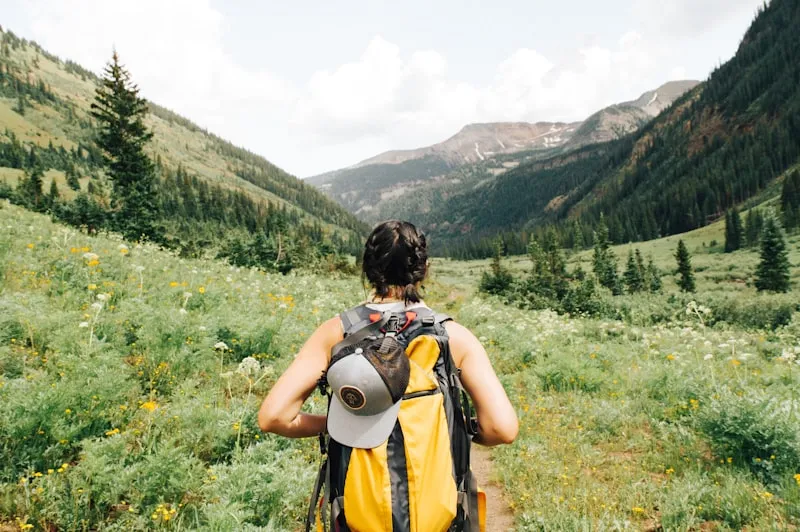

Checklist Persiapan Outbound: Panduan Lengkap dari A-Z agar Kegiatan Berjalan Lancar

Persiapan yang matang adalah kunci sukses kegiatan outbound. Pastikan semua perlengkapan sudah siap sebelum berangkat.
Daftar Isi
Persiapan yang matang adalah kunci sukses setiap kegiatan outbound. Tanpa persiapan yang tepat, pengalaman yang seharusnya menyenangkan bisa berubah menjadi pengalaman yang kurang berkesan. Baik Anda seorang pemula yang baru pertama kali mengikuti outbound, maupun panitia yang bertanggung jawab mengorganisir kegiatan untuk tim perusahaan, checklist persiapan ini akan membantu memastikan tidak ada yang terlewat.
Artikel ini menyajikan panduan persiapan outbound yang komprehensif — dari persiapan jauh hari sebelum kegiatan hingga hal-hal yang perlu diingat pada hari-H. Ditulis berdasarkan pengalaman bertahun-tahun sebagai vendor outbound Batu Malang terpercaya, setiap tips di sini sudah teruji dalam ratusan kegiatan outbound yang telah kami selenggarakan.
Persiapan 2 Minggu Sebelum Kegiatan
Persiapan outbound yang baik dimulai jauh sebelum hari-H. Dua minggu sebelumnya adalah waktu yang tepat untuk memulai persiapan fisik dan administratif.
Persiapan Fisik
Meskipun outbound dirancang untuk semua tingkat kebugaran, memiliki kondisi fisik yang prima akan membuat pengalaman Anda jauh lebih menyenangkan. Berikut tips persiapan fisik yang bisa dilakukan:
- Mulai olahraga ringan — Jogging 15-20 menit setiap hari atau jalan kaki di luar ruangan untuk membiasakan tubuh dengan aktivitas outdoor
- Latihan peregangan — Stretching rutin membantu mencegah cedera otot selama kegiatan outbound
- Perbanyak minum air — Hidrasi yang baik dimulai dari hari-hari sebelum kegiatan, bukan baru pada hari-H
- Istirahat cukup — Pastikan tidur 7-8 jam setiap malam menjelang kegiatan untuk mengisi energi
- Cek kesehatan — Jika memiliki kondisi kesehatan tertentu, konsultasikan dengan dokter sebelum mengikuti outbound
Persiapan Administratif (untuk Panitia)
Jika Anda adalah panitia atau penanggungjawab kegiatan outbound di perusahaan, ada beberapa hal administratif yang perlu disiapkan:
- Konfirmasi jumlah peserta final — Data peserta yang akurat penting untuk logistik makanan, transportasi, dan perlengkapan
- Koordinasi dengan vendor — Pastikan semua detail program, jadwal, dan kebutuhan khusus sudah dikomunikasikan ke vendor outbound
- Siapkan data kesehatan peserta — Formulir riwayat kesehatan dan alergi sangat penting untuk keselamatan
- Atur transportasi — Booking bus atau kendaraan dengan mempertimbangkan rute dan waktu tempuh
- Siapkan anggaran darurat — Selalu siapkan dana cadangan 10-15% dari total budget untuk hal-hal tidak terduga
"Persiapan 80%, pelaksanaan 20%. Itulah rumus keberhasilan setiap kegiatan outbound. Semakin matang persiapan, semakin lancar pelaksanaannya." — Prinsip Gemilang Outbound
Checklist Perlengkapan Pribadi
Berikut adalah daftar perlengkapan yang wajib dibawa oleh setiap peserta outbound. Kami membaginya menjadi beberapa kategori untuk memudahkan packing.
Pakaian dan Alas Kaki
- Pakaian olahraga/outdoor 2 set — Pilih bahan yang nyaman, cepat kering, dan memberikan kebebasan bergerak. Hindari jeans yang berat dan lambat kering
- Celana panjang training — Melindungi kaki dari goresan dan serangga, lebih baik daripada celana pendek untuk outbound di area hutan
- Kaos kaki olahraga 2-3 pasang — Kaos kaki yang baik mencegah lecet di kaki, pilih yang berbahan sintetis yang cepat kering
- Sepatu outdoor anti selip — Investasi terbaik untuk kenyamanan dan keamanan. Sol dengan grip yang baik mencegah terpeleset di medan licin
- Pakaian ganti lengkap — Termasuk pakaian dalam cadangan. Anda akan berkeringat atau basah, jadi pakaian ganti adalah keharusan
- Jaket tipis/windbreaker — Suhu di pegunungan Batu Malang bisa turun drastis, terutama pagi dan sore hari
Perlindungan Pribadi
- Sunscreen SPF 30+ — Paparan sinar UV di dataran tinggi lebih kuat. Aplikasikan 30 menit sebelum kegiatan dimulai
- Topi atau buff — Melindungi kepala dan wajah dari sinar matahari langsung
- Kacamata hitam — Opsional tapi sangat membantu untuk kenyamanan mata
- Lotion anti nyamuk — Terutama jika kegiatan dilakukan di area hutan atau dekat sungai
- Jas hujan/poncho — Cuaca di pegunungan bisa berubah tiba-tiba. Poncho lipat yang ringan tidak memakan banyak tempat

Peserta yang sudah siap dengan perlengkapan lengkap akan lebih nyaman dan percaya diri selama kegiatan.
Kebutuhan Kesehatan dan Hidrasi
- Botol minum 1 liter — Staying hydrated sangat penting untuk stamina dan konsentrasi selama kegiatan outdoor
- Obat-obatan pribadi — Bawa obat rutin jika ada (asma, diabetes, dll) dalam jumlah cukup plus cadangan
- P3K mini — Plester, antiseptik, obat maag, parasetamol, dan oralit. Kecil tapi bisa sangat berguna
- Snack energi — Granola bar, cokelat, atau kacang-kacangan untuk boost energi di sela kegiatan
Baca Juga
→ Panduan Lengkap Outbound di Batu Malang untuk Pemula → Rafting Seru di Batu Malang: Tips Keamanan untuk PemulaPersiapan pada Hari-H
Hari yang ditunggu-tunggu sudah tiba! Berikut hal-hal yang harus dilakukan pada hari kegiatan outbound:
Pagi Hari Sebelum Berangkat
- Sarapan bergizi — Makan makanan yang kaya karbohidrat dan protein untuk energi tahan lama. Hindari makanan terlalu berat atau berlemak
- Final check perlengkapan — Periksa ulang checklist dan pastikan semua sudah masuk tas
- Minum air yang cukup — Mulai hidrasi dari pagi hari, minimal 2 gelas sebelum berangkat
- Pemanasan ringan — Lakukan stretching 5-10 menit untuk mempersiapkan otot
- Antisipasi cuaca — Cek prakiraan cuaca dan siapkan perlengkapan yang sesuai
Saat Tiba di Lokasi
- Ikuti safety briefing sepenuhnya — Jangan meremehkan sesi ini. Informasi keselamatan bisa menyelamatkan Anda
- Kenali area dan jalur evakuasi — Perhatikan di mana pos P3K, toilet, dan jalur keluar darurat
- Informasikan kondisi kesehatan — Jika merasa kurang fit, jangan sungkan untuk memberitahu instruktur
- Simpan barang berharga dengan aman — Gunakan dry bag atau titipkan di tempat aman yang disediakan vendor
Tips Khusus untuk Kegiatan Air (Rafting/Water Games)
Jika program outbound Anda mencakup kegiatan air seperti rafting atau water games, ada perlengkapan tambahan yang perlu disiapkan:
- Pakaian khusus air — Celana pendek berbahan quick-dry dan baju lengan panjang untuk melindungi dari gesekan dan sinar matahari
- Sandal gunung/water shoes — Jangan gunakan sendal jepit! Sandal gunung dengan tali pengikat atau water shoes yang tidak mudah terlepas
- Dry bag — Wajib untuk menyimpan handphone, dompet, dan barang elektronik lainnya. Pastikan dry bag berkualitas dan benar-benar kedap air
- Waterproof sunscreen — Sunscreen biasa akan luntur terkena air. Pilih yang waterproof SPF 50+
- Tali kacamata/strap — Jika memakai kacamata, gunakan tali pengaman agar tidak terlepas saat di air

Perlengkapan khusus kegiatan air harus dipersiapkan dengan ekstra teliti untuk keamanan dan kenyamanan.

✅ Paket All-Inclusive — Semua Perlengkapan Kami Siapkan! Tanya Sekarang
Yang Tidak Boleh Dibawa
Sama pentingnya dengan mengetahui apa yang harus dibawa, Anda juga perlu tahu apa yang sebaiknya ditinggalkan:
- Perhiasan mahal — Risiko hilang atau rusak sangat tinggi selama kegiatan outdoor aktif
- Sepatu hak tinggi — Sepatu formal atau hak tinggi sangat tidak sesuai untuk medan outdoor
- Barang elektronik mahal — Kecuali dilindungi dengan baik, sebaiknya laptop dan tablet ditinggalkan
- Parfum berlebihan — Aroma yang kuat bisa menarik serangga di area alam
Peran Vendor Outbound dalam Persiapan
Vendor outbound Batu Malang terpercaya akan membantu meringankan beban persiapan Anda. Berikut hal-hal yang biasanya ditangani oleh vendor profesional seperti Gemilang Outbound:
- Survei dan persiapan lokasi sebelum kegiatan
- Setup peralatan dan instalasi games
- Penyediaan peralatan keselamatan standar (helm, pelampung, harness, dll)
- Koordinasi catering dan logistik makanan
- Tim instruktur dan fasilitator profesional
- Asuransi kegiatan untuk seluruh peserta
- Tim medis dan P3K siaga
- Dokumentasi foto dan video kegiatan
Kesimpulan
Persiapan yang matang adalah fondasi dari kegiatan outbound yang sukses dan menyenangkan. Dengan mengikuti checklist ini, Anda bisa memastikan pengalaman outbound Anda — baik di Batu Malang maupun di tempat lain — berjalan lancar tanpa kendala berarti.
Ingat, memilih vendor outbound Batu Malang terpercaya juga merupakan bagian penting dari persiapan. Vendor yang berpengalaman akan membantu memastikan semua aspek teknis dan logistik tertangani dengan baik, sehingga Anda dan tim bisa fokus menikmati setiap momen kegiatan. Hubungi Gemilang Outbound sekarang untuk konsultasi gratis!
FAQ
Tentang Penulis

Ulil
Penulis dan praktisi outbound berpengalaman di Batu Malang. Spesialis dalam perencanaan dan persiapan kegiatan outbound untuk perusahaan dan organisasi.